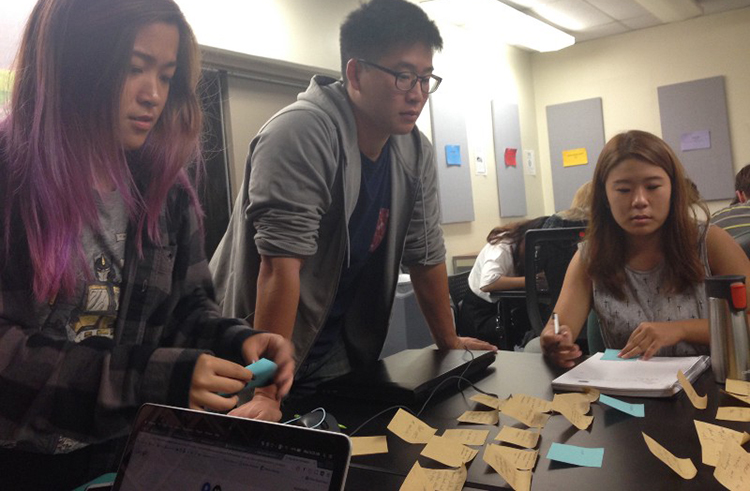

Featured Work: "idea8"
Platform: Web Application
Tools: Adobe Illustrator, HTML, CSS, Photoshop, Open Source
Purpose: Make the Ideation Phase for Teams easy
Team: Potato.
Kenny Nieh (Project Manager/ Design lead)
Kathy Hoang (Designer/Coder)
Jamie Moon (Project Manager/Designer)
Annie Chen (Designer/Code Lead)
Yashna Bowen (Designer/Coder)
Fairy Bui (Designer/Coder)
Alex Kim (Designer/Graphics/Code)
Our team logo.
Why we started this project
To put it simply, this project was an assignment given to me and my teammates in one of the design-based classes that UCSD offers. For this class students were formed teams of 5-7, coordinated team meetings, and fleshed out a digital application designed to meet a problem space of their choice. This was one of the first group-based projects I contributed to so I learned a lot about being part of design-team.

Team Potato at work.
The Journey Begins
This class was a challenge because as soon as we got in to our design teams our we were on our own. This was both a liberating and daunting feeling; we had the power to create anything that wanted! But at the same time it had be somewhat applicable in the real world. We didn’t want to be designing an app that no one would use. From the get go, it seemed like many of us already had a few ideas that we thought would make the a good app. However, we realized that in order to make an useful app we needed to take a step back and start with questions like “who are we designing for?” and “what needs do these people have?”. In the end we decided to tackle the need for more creativity in students and from there we set course to do some user research.

Our affinity diagram made from our user interviews
The Research
For me, this was the first time I had conducted user research for a product so it was difficult at times but with the guidance of some of my more experienced team-mates we managed to pull some good data. We knew we wanted to design a product with college students being its target audience. This made it easy for us to conduct research on potential consumers since we all happen to attend UCSD.
Kathy, me and Jamie, thinking hard about the problem space.
What We Found
Through our research we ended up finding out that this problem is uncommon and that it would be quite difficult to create a product that could effectively aid people from all sorts of backgrounds. Despite knowing it would be difficult we decided to pursue this idea. Some of the things we found regarding creativity were, but not limited too:
1. People don’t have the time to pursue creativity
2. Most people felt that they get the most creative when under pressure (not too much though)
3. People felt that they would be motivated if they had peers.

Us thinking about how to make the flow of idea8 before implementing
Our Solution
Idea8 was actually inspired by the ideation process called crazy8s where teams were called to rapidly brainstorm 8 ideas individually and collaborate amongst themselves to come up with a solution together. As a design team we also used this technique in our ideation phase and thought it would could be a great solution to our creativity crisis. From there we decided to create a digital platform of crazy8s so that teams could communicate and collaborate remotely and effectively. When making this product we envisioned students who had trouble finding inspiration for their next art project or teams who need to collaborate to get to a solution to find this useful.